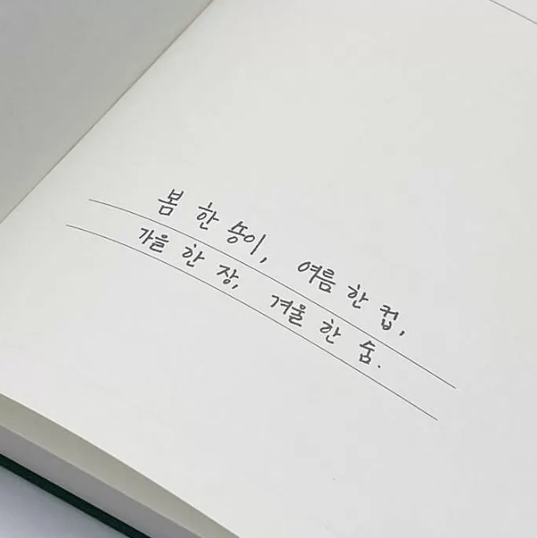
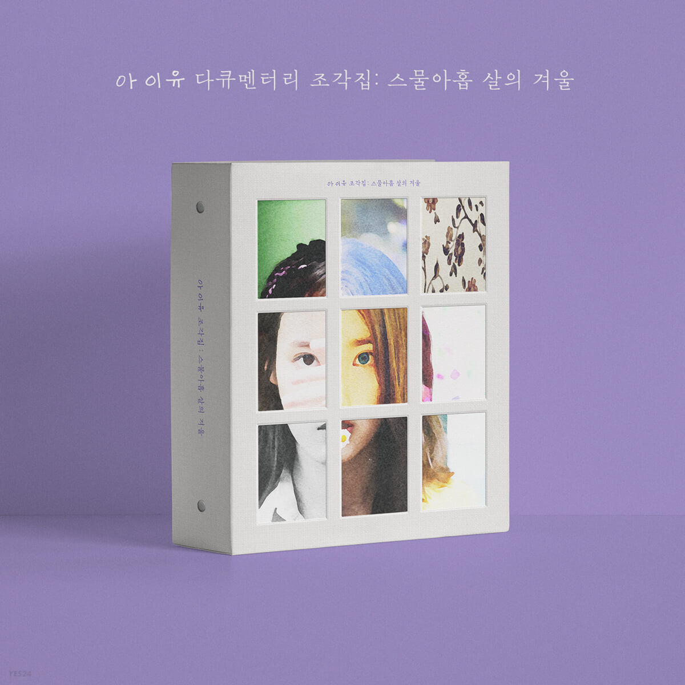

안녕하세요
영화도 그렇지만 제가 듣는 노래들은 계절을 따라 흐릅니다. 날은 차지만 겨울에 들으면 마음이 따뜻해지는 노래들이 있습니다. 겨울에 듣기 좋은 노래들을 하나씩 추천해 드리겠습니다.

아이유 겨울잠 - 조각집
계절을 각각의 사물로 비유해서 자신이 사랑하는 대상에게 선물하고 싶은 마음이 가사에 잘 담겨져있습니다.
봄 몇 송이,
여름 한 컵,
가을 한 장,
겨울 한 숨.

계절을 표현한 정말 정갈하고 멋진 문장입니다.
아이유 겨울잠 가사
때 이른 봄 몇 송이 꺾어다
너의 방 문 앞에 두었어
긴 잠 실컷 자고 나오면
그때쯤엔 예쁘게 피어 있겠다
별 띄운 여름 한 컵 따라다
너의 머리맡에 두었어
금세 다 녹아버릴 텐데
너는 아직 혼자 쉬고 싶은가 봐
너 없이 보는 첫 봄이, 여름이
괜히 왜 이렇게 예쁘니
다 가기 전에 널 보여줘야 하는데
음-음, 꼭 봐야 하는데
내게 기대어 조각잠을 자던
그 모습 그대로 잠들었구나
무슨 꿈을 꾸니?
깨어나면 이야기해 줄 거지?
언제나의 아침처럼
음-, 음-
빼곡한 가을 한 장 접어다
너의 우체통에 넣었어
가장 좋았던 문장 아래 밑줄 그어
나 만나면 읽어줄래?
새하얀 겨울 한 숨 속에다
나의 혼잣말을 담았어
줄곧 잘 참아내다가도
가끔은 철없이 보고 싶어
새삼 차가운 연말의 공기가
뼈 틈 사이사이 시려와
움츠려 있을 너의 그 마른 어깨를
꼭 안아줘야 하는데
내게 기대어 조각잠을 자던
그 모습 그대로 잠들었구나
무슨 꿈을 꾸니?
깨어나면 이야기해 줄 거지?
언제나의 아침처럼
음-, 음-

함께 들으면 좋을 아이유의 겨울 노래